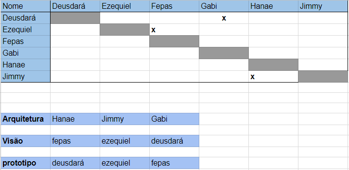
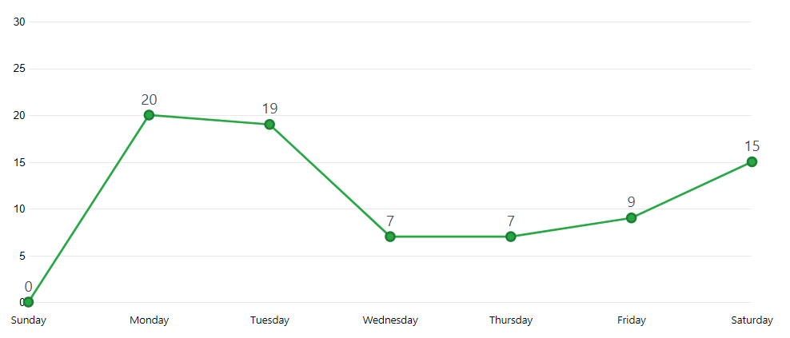

Sprint 2
Duração
Data início: 25/03/2018Data término: 31/03/2018
Duração: 7 dias
Objetivos
- Corrigir documentos;- Iniciar o código do React e API;
- Treinamentos.
Sprint Backlog
#30 Criar Roadmap#55 Refatorar guia de contribuição
#59 Hello Word
#65 Refatoração do documento de visão
#66 Refatoração do documento de Arquitetura
#72 Estudo e definição da arquitetura do projeto
#75 ocumentar os custos
#76 Documentar os riscos
#77 Treinamento React-Native
#52 Documentar sprint
#60 Criar usuário gestor
#67 Evolução do Protótipo
#68 Editar usuário gestor
#69 Visualizar usuário gestor
#71 Analizar configuração de ambiente React Native
#73 Documentar Metododologia
#74 Desenvolver a API
#78 Sugerir temas GitHub Pages
#80 Configurar integração contínua CI e Análise estática de código
#81 Automatizar teste coverage
#91 Criar Roadmap por áreas
Papéis
- Product Owner: João Egewarth
- Scrum Master: Isaque Alves
- DevOps: Eliseu Egewarth
- Arquitetura: Gabriela Alves
- Desenvolvedores: Beatriz Hanae, Ezequiel De Oliveira, Felipe Campos, Gabriela Guedes, Guilherme Deusdará e Vitor Leal.
Pareamento
Pontos
Planejados:
- 53 PontosAdicionados:
Débito Técnico:- 8 pontos
Viabilidade Técnica:
- 1 ponto.
Executados:
- 48 pontosBurndown

Revisão
Duração: 45 minutos.Na revisão foram apresentados todos os artefatos produzidos durante a sprint.
Também foi definido que o grupo ia flexibilizar os testes para essa sprint, devido a curva de aprendizado.
Dívidas Técnicas
#81 Automatizar teste coverageDevido a falha no planejamento das atividades presentes na mesma sprint e possuíam interdependência uma da outra foi decidido que seria melhor remanejá-la para a próxima sprint.
#70 Manter usuário gestorDevido a uma dificuldade com a implementação do Travis, duas issues interligadas ao épico de manter usuário gestor não foram mescladas com a branch master.
- #69 Visualizar usuário gestor- #60 Criar usuário gestor
Retrospectiva
Duração total de: 45 minutos.- Foi discutido o conceito de pareamento, para auxiliar nas próximas atividades deste tipo a ocorrerem em momentos futuros;
- Poderá ser ampliadas as trocas de informações entre o time, pois houve uma maior realização de trabalhos em duplas;
- Haverá uma melhor divisão de algumas tarefas.
Pontos positivos
- O pareamento ajudou na curva de aprendizagem;
- Time está mais integrado;
- Ocorreu maior autonomia dentro do grupo;
Pontos Negativos
- Algumas duplas não conseguiram disseminar muito bem o conhecimento sobre React;
- Houve uma maior preocupação com MDS em detrimento de EPS;
- Falta de pareamento pode afetar EPS, devemos melhorar o alinhamento dos papéis;
- Ocorreu erro na priorização; e
- Foi detectado o uso de celular que afetou as reuniões.
Quadro de conhecimento

Frequência de commits
Desempenho
Riscos
Risco |
Ação Preventiva |
Ação Reativa |
Atividades secundárias dos membros |
Definir calendário para controle entre o projeto e as atividades acadêmicas dos membros. |
Organizar o pareamento para que nenhuma dupla fique inativa por conta de outras atividades. |
Falha nas máquinas por uso extensivo do emulador |
Usar somente quando for testar uma funcionalidade |
Recuperar o sistema operacional, caso não dê certo recinfigurar a máquina. |
Curva de aprendizado nos testes |
Treinamento e estudo de testes em React |
Os membros da equipe com marior conhecimento deve ajudar os que possuem menos. |
Os calculos e os gráficos de burndown dos riscos podem ser encontrados aqui!
Feedback
Nessa sprint foram iniciados a produção de código da API e do aplicativo em React Native. Além disso foram definidos o pareamento entre a equipe de MDS e mudanças nos times ao manter a Gabriela Barroso no documento de Arquitetura, bem como o Guilherme Deusdará no Visão, ambos como membros fixos com os objetivos principais de manter a qualidade do documento e ajudar aos outros membros a melhorarem o desempenho na curva de aprendizagem.
O velocity da equipe está aumentando independente dos débitos técnicos gerados, foi pensada a opção de reduzir a quantidade de pontos planejados para a sprint, mas não será muito válido tendo em vista que os débitos técnicos são pontuais e relacionados às dúvidas e dificuldades encontradas pelo DevOps.
A frequência de commits do grupo refletiu uma curva de conhecimento decrescente relativa às produções documentais e de código, pois em um primeiro momento foi refatorado muitos documentos e logo em seguida iniciada a elaboração do código. Contudo, a quantidade de commits foi reduzida afetando negativamente a curva de aprendizagem do time, tal redução provêm do número alarmante de membros commitando errado, proveniente de muitas linhas e poucos commits. Para resolver essa dificuldade foi definido que sprint 3 será necessário um treinamento sobre boas práticas de uso do repositório, sendo necessário a participação todo o time.
Em relação ao burndown geral dos riscos houve um aumento significativo nesta sprint, a partir do início de programas por parte do time e a curva de aprendizagem da tecnologia e dos testes terem crescimento acima do esperado. Foi percebido também problemas com o uso extensivo do emulador que ocasionou problemas técnicos nas máquinas de alguns membros. Tendo em vista estes riscos identificados na retrospectiva, a ameaça que pode trazer graves problemas para o projeto é a falha nas máquinas por uso extensivo do emulador que não se apresenta uma ação reativa controlável que possa ser implementada pela equipe de gerência do projeto. Enquanto isso existem perigos quanto a adaptação da equipe com as tecnologias e na divisão do repositório da API com outra equipe de EPS sendo estes mantidos desde a sprint 1. Para mitigar a probabilidade de ameaças tem sido mantido os treinamentos ministrados por Lucas Amoedo, e há ainda a dificuldade de trabalhar com outro grupo sendo realizada a arquitetura de micro serviços na API.
Vale relembrar que houve uma atualização significativa no conhecimento de git, scrum, kanban e React por parte da equipe desde o início do projeto.
Foi implementada a mudança no uso das branchs do repositório removendo a branch development e iniciando a aplicação de Tags para o versionamento estável do produto.
Para solucionar os problemas com a tecnologia e minimizar as dúvidas o time passou a se integrar com comunidades do Telegram. Para as outras dúvidas foi melhor a adoção de um coach que realiza treinamentos e pode atender mais diretamente ao time quando é necessário uma ajuda mais direcionada. Uma vez que o time de EPS também não possui muito conhecimento relativo a linguagem que está sendo atualmente utilizada.